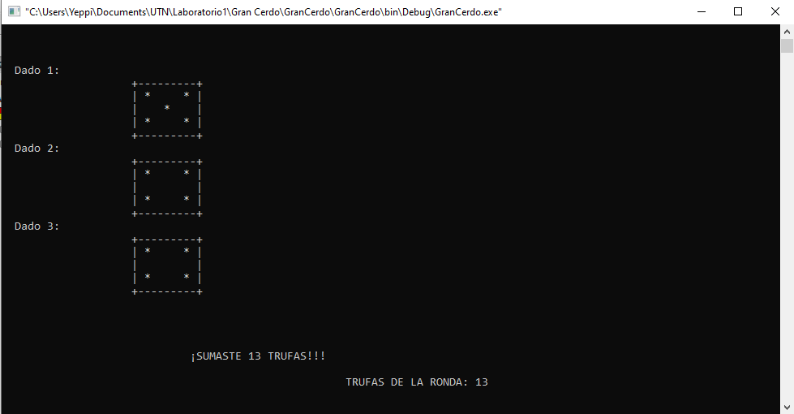
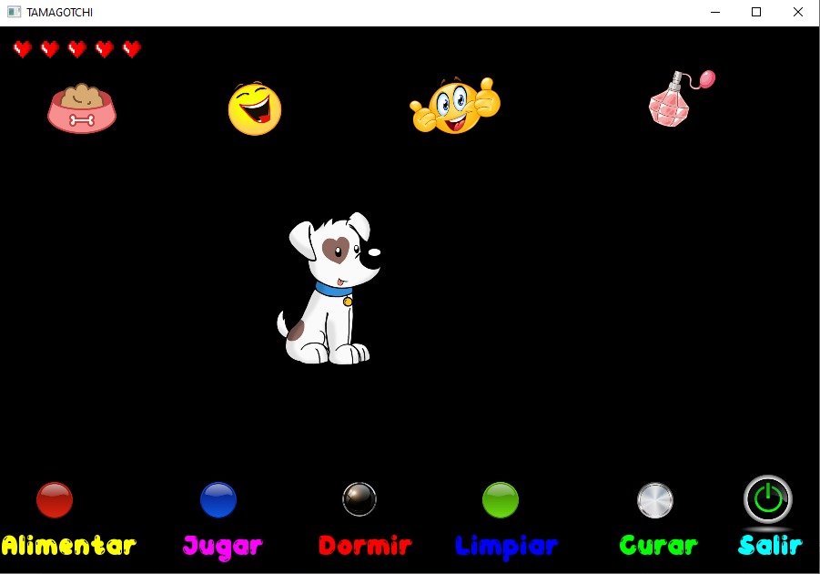
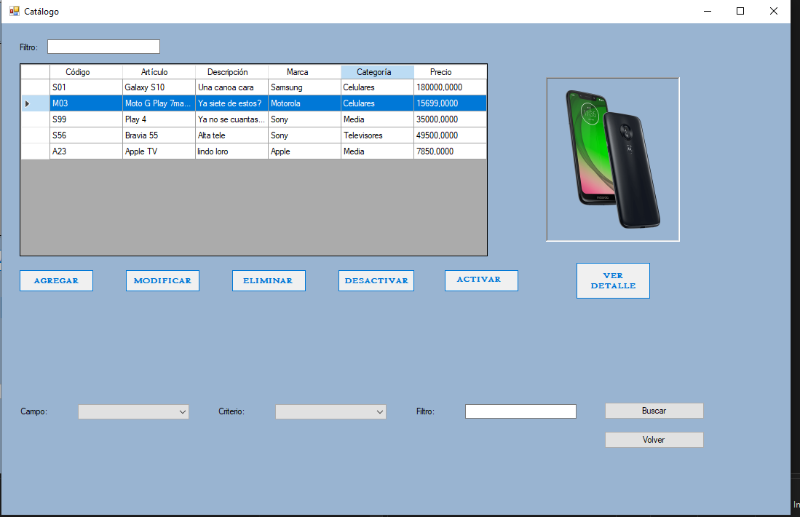

YESSICA NATALIA DOMINGUEZ
Bienvenidos a mi Portfolio!
Soy Yessica, estudiante de la Tecnicatura en Programación, carrera que dicta la Universidad Tecnológica Nacional, Facultad Regional Gral Pacheco.
Realicé cursos como C# Nivel 2 (.Net - POO - SQL) de Maxi Programa y otros de Excel y Diseño web HTML básico de Dostin Hurtado. Actualmente me encuentro
haciendo el curso C# Nivel 3 (ASP .NET WebForms) de Maxi Programa. Tengo muchas ganas de seguir aprendiendo y de seguir haciendo proyectos que me den experiencia.
Mis Proyectos
Juego de azar con Programación estructurada |
Mascota virtual con POO que juega al Snake |
Catálogo con POO + .NET + SQL en C# |
Contactame

Ir a Linkedin